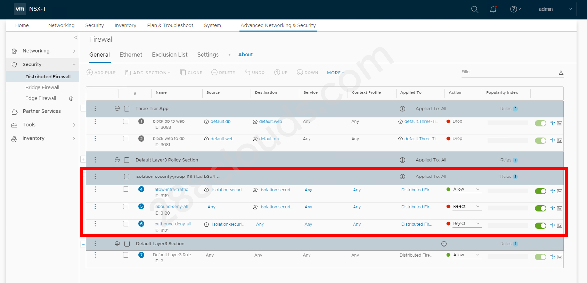

vRA 8 + NSX-T Blog Series Part 6: vRA 8 Blueprint with On-demand Security Group

Contents
You can create a vRA 8 blueprint to deploy machines and place them in an on-demand NSX-T security group.
Note that with this method, you must place the machines on existing networks (private or outbound). This network profile cannot be combined with creating on-demand NSX-T networks.
Prerequisites
vRA 8:
- NSX-T account connected
- Basic infrastructure configured (Projects, Cloud Zones, Flavor Mappings, Image Mappings)
NSX-T:
- logical network(s) configured
Process Overview
- Create or edit a network profile.
- Select which existing security groups you’d like to use.
- Create a blueprint with Cloud Agnostic Machine and NSX Network objects.
optional steps:
- Create inputs in the blueprint to customize the machine name.
Demo / Example
Configure Network Profile
- Go to “Infrastructure” > “Network Profiles” (under Configure) and click “+ NEW NETWORK PROFILE”. (or you can choose to edit an existing network profile that has existing networks).
- Choose an account/region and give the profile a name.
- Configure existing networks.
- Go to “Network Policies” tab and select “Create an on-demand security group” radio button.

- Save the network profile.

Create and Configure Blueprint
- Go to “Blueprints” and Click “+ NEW” to create a new blueprint. (or you can choose to use an existing blueprint that uses existing networks).
- Give a name to the blueprint and choose a project.
- Drag on a Cloud Agnostic Machine and a NSX Network onto the canvas. Note that you do not need to add the Security Group object to the blueprint.
- Connect the Cloud Agnostic Machine to the NSX Network on the canvas.
- On the right side in the YAML file, choose an image and size for the machine.
- Under
- network:, add the lineassignment: staticto give a static IP address to the machine from the IP range we’ve created. - For the network, below
networkTypeadd the lineconstraints:then another line- tag:to choose the existing network you want to use. Make sure this existing network is available in the network profile where you selected to create an on-demand security group. - Choose
privateoroutboundfornetworkTypeinstead ofexisting. - Click “TEST”.
- Click “DEPLOY” to create a new deployment.
- Give it a deployment name, choose “Current Draft”, the cick “DEPLOY”.

Verify Deployment
- Once deployed, log into NSX-T UI and go to “Advanced Networking & Security” > “Inventory” > Groups”. You will see that a new security group has been created with the name starting with “isolation-securitygroup”.
- Go to “Security” > “Distributed Firewall”.
- You will see that a new firewall section has been created for the security group that has just been created. If you set the
networkTypein the blueprint asprivate, you will see that the rules reject all inbound and outbound traffic. If you set thenetworkTypeasoutbound, the rules will allow outbound traffic and reject only the inbound traffic.


Demo / Example Blueprint YAML File
|
|